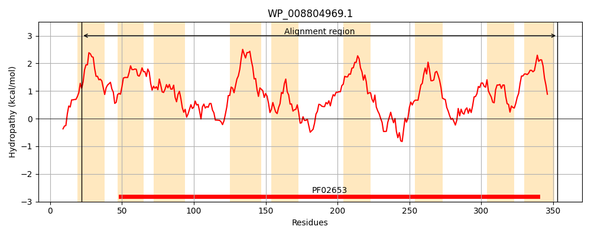
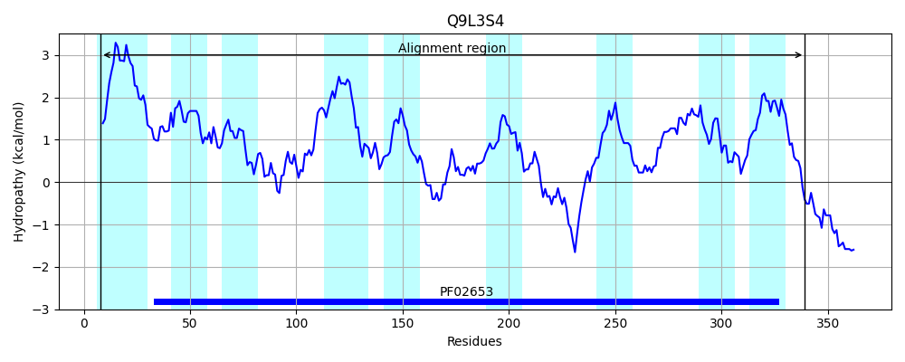

Hit Accession: Q9L3S4
Hit TCID: 3.A.1.4.4
Hit Description: gnl|BL_ORD_ID|18455 gnl|TC-DB|Q9L3S4|3.A.1.4.4 Putative membrane protein - Anabaena sp. (strain PCC 7120).
Mach Len: 334
e:0.000000
Query TMS Count : 9
Hit TMS Count: 9
TMS-Overlap Score: 7.650000
Predicted Substrates:CHEBI:9888;urea
BLAST Alignment:
Score: 642 , Bit scores: 251 bits, E-value: 3.4e-81, Alignment length: 334, Percentage identity: 43
Query: 22 ILLVLGLLSMPFLALLPASHPLAVPSWLLTLSGKILCYAIVAVALDLVWGYAGMLSLGHGIFFALGGYAMGMYLMRQAAGDGLPAFMSFLSWSELPWFWWGTQHFAW--AMALVVLVPGLLALVFGWFAFRSKIKGVYFSIMTQALTYAGMLLFFRNETGFGGNNGFTGFTTLLGFPVTATGTRATLFMATVLLLLLTLWLGSALAQSKFGRILTAVRDAENRLMFCGYDPRGFKLLVWTLSAVLCGLAGALYVPQVGIINPSEMSPTNSIEAAIWVALGGRGTLIGPVLGAGLVNGAKSIFTVAMPEYWQLFLGLIFIIVTLFLPRGVMGLLR 353
IL+ +G++ L L+ PL + + L L G+ L AIVA+ +DL+WGY G+LSLGHGIFF LGGYA+ MYL + + +S+ + +G +++ A+A VV++PGLLA + G+ FR++IKGVYFSI+TQA F + F G NG FTTL G V+ T+ + TVL L T + L +FGR+L A+RD E+R+ F GYDP FK LV+ +S + G+AGA Y Q G ++P M SIE IWVA+GGR TLIG VLG LVN A++ + E W F G +F+IV LP G++G LR
Sbjct: 8 ILIEVGVVVAIALILILIM-PLVLSEFRLNLLGRFLSLAIVALGIDLIWGYTGLLSLGHGIFFGLGGYAIAMYL-KLLKSQRVSYLISWNCMVSRNFLGFGGPFYSFPIAVAAVVIIPGLLAGLLGYLVFRNRIKGVYFSILTQAAIIVFFNFFNGQQQFFNGTNGLIDFTTLFGATVSDPKTKFIFYTLTVLFLAATYGICRWLTSGRFGRLLIAIRDDESRVRFSGYDPTDFKTLVFAVSGAIAGIAGAFYTLQSGSVSPRAMDIAFSIEMVIWVAVGGRATLIGAVLGTLLVNYARAFLSEQFAEIWLFFQGALFLIVVTVLPDGLVGWLR 339 | Protein Hydropathy Plots: |
|---|
|  |  |
Pairwise Alignment-Hydropathy Plot:
|
|---|
 |